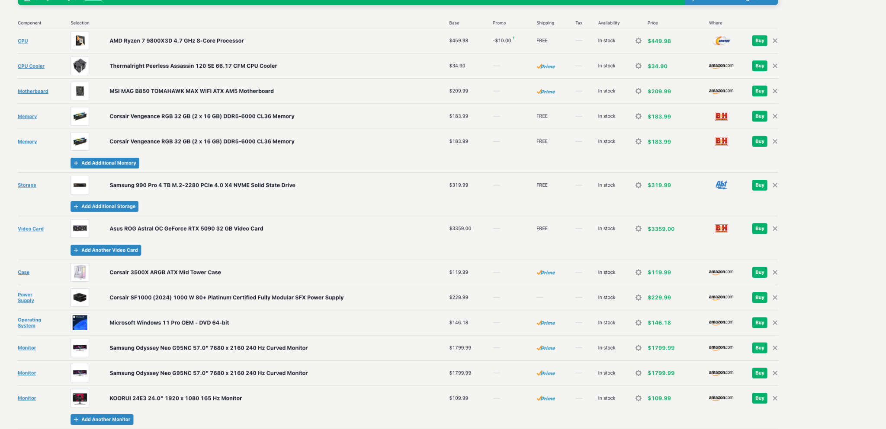
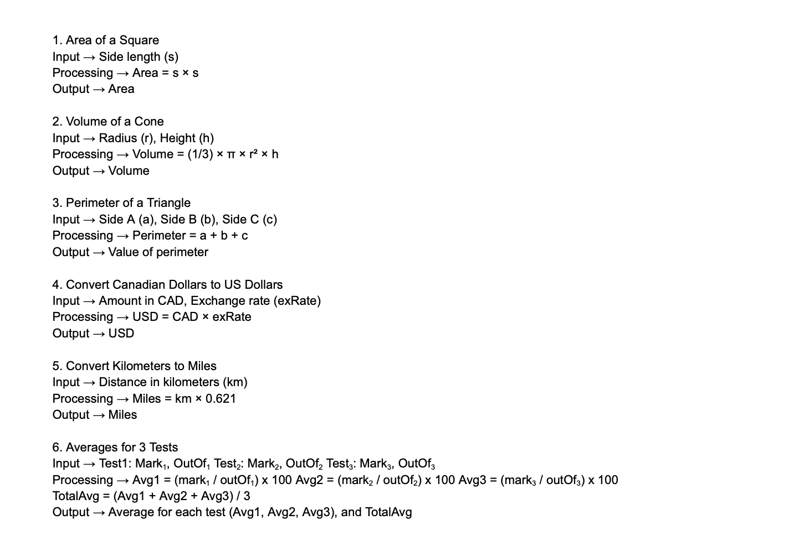

Unit 1: Problem Solving Process
In this unit, I learned how to solve problems step by step using algorithms, flowcharts, and programming. I started to understand how planning out ideas clearly makes coding so much easier. I also learned that it’s okay to make mistakes while coding because that’s how you figure out what really works.
01 – PC Build Project

For this project, I researched computer parts and built my own PC setup. I learned how all the components, like the CPU, GPU, RAM, and power supply, work together to make a computer run. t first, I found it confusing to make sure every part was compatible. I kept mixing up which pieces went with which. I fixed this by using PC Part Picker and double-checking everything online. It felt really satisfying once the build made sense.
02 – Introduction to Programming
Click the link below to watch my video recording for this unit:
Watch Recording

I practiced basic programming in Scratch by using loops, motion, and if-statements. My project drew colorful patterns when I pressed different keys. I liked seeing how small changes in code could make totally different results. I found it challenging to figure out the correct angles for shapes like the star and circle since Scratch doesn’t draw curves naturally. I solved this by researching angle formulas for polygons and experimenting until the shapes looked right. Next, I’d like to use these shapes to create a full scene with trees, houses, and stars, adding colors and dotted lines to make it more creative and detailed.
03 – Peanut Butter & Jelly Sandwich Algorithm

I found it challenging to write every small step in the correct order since it’s easy to skip details when explaining something simple. I solved this by slowing down and imagining I was giving instructions to someone who didn’t know what a sandwich was. Next, I’d like to turn the pseudocode into an actual program or animation that follows my steps automatically.
04 – Implementing Algorithms

I made a simple counting program in Scratch that used a loop to add 2 each time and show the number on the screen. It helped me understand how loops, variables, and timing all work together in coding. I found it challenging to get my loop working properly because I mixed up my variables at first. I fixed it by checking my code block by block until I saw where I went wrong.
05 – Algorithm Flowchart

I created a flowchart to show how an algorithm takes input, does a process, and gives an output. It helped me plan how a program works before actually writing the code. I found it challenging to understand the logic for my algorithm flowchart and make sure each step connected properly. At first, I wasn’t sure how to decide where the decisions or loops should go. I fixed this by reviewing examples, testing different layouts, and checking that each part flowed in the right order.
Example Code Snippet
INPUT: side length (s)
PROCESS: area = s * s
OUTPUT: area